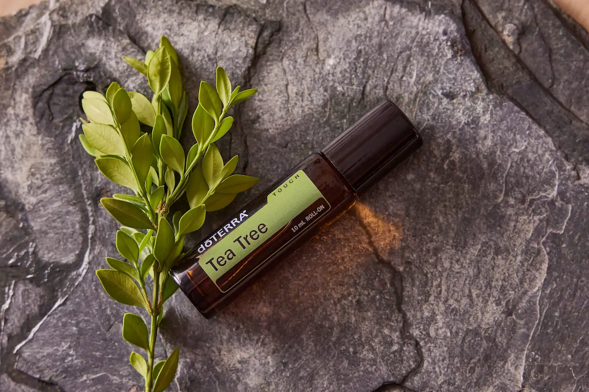

SKIN1004 Madagascar Centella Tea-Trica B5 Cream: recenzie a cremei calmante pentru pielea cu tendință acneică
Recenzie editorială independentă. Produs oferit de
BeautyPanda
Acest material a fost pregătit în scopuri informative și
editoriale. Furnizarea produsului pentru recenzie nu înseamnă că
materialul articolului a fost aprobat de brand sau de vânzător.
Informațiile prezentate se bazează pe analiza compoziției, a
caracteristicilor declarate ale produsului și a datelor
disponibile despre ingredientele acestuia. Acestea nu reprezintă o
recomandare oficială a producătorului și nu înlocuiesc consultul
unui specialist.
Toate denumirile de branduri, mărcile comerciale și denumirile
produselor aparțin deținătorilor legali ai drepturilor asupra
acestora și sunt utilizate exclusiv în scopuri informative și
editoriale.
Produs oferit de BeautyPanda pentru o recenzie editorială independentă.
Analizăm compoziția SKIN1004 Madagascar Centella Tea-Trica B5 Cream 75 ml : particularitățile formulei, rolul extractului de arbore de ceai, al centellei și al pantenolului, precum și modul în care crema poate fi inclusă într-o rutină de îngrijire pentru pielea cu tendință de apariție a leziunilor, iritației și sensibilității crescute.

SKIN1004 Madagascar Centella Tea-Trica B5 Cream
Cremă calmantă pentru îngrijirea pielii cu tendință de apariție a leziunilor, iritației și sensibilității crescute. Formula conține ingrediente utilizate în îngrijirea pielii cu imperfecțiuni, inclusiv extract de arbore de ceai, centella și pantenol. În recenzie analizăm compoziția cremei, rolul principalelor ingrediente, particularitățile de utilizare și modul în care produsul poate fi inclus în rutina zilnică de îngrijire a pielii cu disconfort și tendință de apariție a leziunilor.
De ce merită această cremă atenție?
SKIN1004 Madagascar Centella Tea-Trica B5 Cream este o cremă-gel ușoară, concepută pentru hidratarea și calmarea pielii. La baza formulei se află 5% pantenol, extract și ulei de arbore de ceai, componente derivate din centella și Ceramide NP.
Pantenolul este utilizat în îngrijirea cosmetică pentru menținerea hidratării și confortului pielii, iar Ceramide NP face parte din categoria componentelor care contribuie la susținerea barierei protectoare a pielii. Formula conține, de asemenea, centella, alantoină, beta-glucan și mai multe forme de acid hialuronic.
Un aspect deosebit de interesant este combinația dintre ingredientele calmante și hidratante și textura ușoară de gel. De aceea, în această recenzie analizăm separat compoziția cremei, rolul pantenolului și al arborelui de ceai, componentele derivate din centella, particularitățile texturii și modul în care produsul poate fi inclus în rutina zilnică de îngrijire a pielii cu tendință de apariție a leziunilor.
Textura și prima utilizare
SKIN1004 Madagascar Centella Tea-Trica B5 Cream are formatul unei creme-gel ușoare. Producătorul o descrie ca pe o formulă hidratantă, care se distribuie ușor pe piele, se absoarbe rapid și nu lasă o senzație grea sau lipicioasă.
Conform recomandărilor producătorului, crema se utilizează la finalul rutinei de îngrijire de bază. O cantitate mică de produs se distribuie pe pielea feței și se tapotează ușor cu palmele până la absorbție.
La prima utilizare este important să ții cont de toleranța individuală a pielii. Formula conține nu doar pantenol și componente derivate din centella, ci și ulei de arbore de ceai, de aceea, în cazul pielii sensibile, este recomandat să începi cu o cantitate mică și să urmărești reacția pielii. În cazul apariției unei senzații intense de arsură, a iritației sau a roșeții persistente, utilizarea produsului trebuie întreruptă.


Analiza compoziției: Ce conține formula?
Unul dintre ingredientele-cheie ale formulei este pantenolul 5% (vitamina B5) — un ingredient hidratant care contribuie la menținerea confortului pielii și la reducerea senzației de uscăciune. Producătorul îl evidențiază, de asemenea, ca unul dintre ingredientele principale ale Tea-Trica B5 Cream.
Formula conține, de asemenea, apă de arbore de ceai și ulei de arbore de ceai, niacinamidă, centella, alantoină și dipotassium glycyrrhizate . Aceste ingrediente sunt utilizate în îngrijirea cosmetică pentru menținerea hidratării, confortului și a unei stări mai echilibrate a pielii.
Pentru susținerea barierei cutanate, formula este completată cu Ceramide NP, iar pentru hidratare suplimentară contribuie acidul hialuronic, acidul hialuronic hidrolizat și hialuronatul de sodiu. În compoziție se regăsesc, de asemenea, beta-glucan și extracte de centella.
O particularitate interesantă a formulei este prezența acidului mandelic, însă acesta se află mai aproape de finalul listei complete de ingrediente. Prin urmare, crema nu trebuie considerată un produs exfoliant cu acizi propriu-zis: rolul său principal în rutina de îngrijire este legat de hidratarea și menținerea confortului pielii.

Cine ar trebui să țină cont de particularitățile formulei?
SKIN1004 Madagascar Centella Tea-Trica B5 Cream poate fi interesantă pentru îngrijirea pielii normale, mixte și grase, mai ales dacă îți dorești o hidratare ușoară, fără o textură cremoasă și densă. Producătorul recomandă produsul în special pentru aceste tipuri de piele.
În același timp, formula conține ulei și extract de arbore de ceai. Deși producătorul le prezintă ca ingrediente cu rol calmant, reacția pielii la astfel de ingrediente poate varia de la o persoană la alta. În cazul pielii sensibile sau cu tendință de iritare, este recomandat să introduci produsul treptat și să urmărești toleranța pielii.
Crema conține, de asemenea, niacinamidă, pantenol, Ceramide NP și mai multe ingrediente hidratante, astfel încât poate fi considerată o etapă finală a rutinei de îngrijire, orientată spre menținerea hidratării și a barierei protectoare a pielii.
Dacă în rutina de îngrijire sunt deja utilizate mai multe produse active, de exemplu acizi sau retinoizi, este important să ții cont de încărcarea totală asupra pielii. În cazul apariției unei senzații intense de arsură, a iritației sau a roșeții persistente, utilizarea produsului trebuie întreruptă.
Cum se utilizează corect crema?
SKIN1004 Madagascar Centella Tea-Trica B5 Cream este destinată utilizării la finalul rutinei de îngrijire de bază. După curățarea pielii și aplicarea serurilor sau a altor produse de îngrijire necesare, o cantitate mică de cremă se distribuie uniform pe pielea feței.
Textura ușoară de gel permite utilizarea cremei ca etapă finală hidratantă a rutinei, inclusiv în cazul pielii mixte și grase. Cantitatea de produs poate fi ajustată în funcție de starea și nevoile pielii.
Dacă crema este utilizată dimineața, după finalizarea rutinei de îngrijire se recomandă aplicarea unui produs de protecție solară cu un SPF potrivit. Crema nu înlocuiește protecția solară.


Particularități practice de utilizare
Aplică SKIN1004 Madagascar Centella Tea-Trica B5 Cream pe pielea curată, ca etapă finală a rutinei de îngrijire. Crema poate fi distribuită într-un strat subțire și uniform, apoi tapotată ușor cu palmele până la absorbție.
Datorită texturii ușoare de gel, produsul poate fi deosebit de comod în situațiile în care cremele mai dense se simt prea grele pe piele. În același timp, necesarul individual de hidratare poate varia, de aceea cantitatea de produs trebuie adaptată în funcție de starea pielii și de celelalte produse utilizate în rutină.
Formula conține componente derivate din arborele de ceai. Dacă pielea este predispusă la iritații sau a reacționat anterior la ingrediente similare, la prima utilizare este recomandat să aplici o cantitate mică de produs și să urmărești reacția pielii. În cazul apariției unei senzații intense de arsură, a iritației sau a roșeții persistente, utilizarea trebuie întreruptă.
Unde găsești SKIN1004 Tea-Trica B5 Cream?
SKIN1004 Madagascar Centella Tea-Trica B5 Cream 75 ml este disponibilă la BeautyPanda. Pentru a afla disponibilitatea și prețul actual, contactează direct vânzătorul.
Magazinele Beauty Panda din Moldova:
📍 Soroca
str. Grigore Vieru 9B, Soroca, Moldova, MD-3001
📍 Drochia
str. 31 August 20/C, Drochia, Moldova
*Disponibilitatea, prețul și condițiile de achiziție se recomandă a fi verificate la vânzător înainte de vizită. Linkul duce către pagina vânzătorului de pe Instagram.
Întrebări frecvente
Pentru ce tip de piele este potrivită SKIN1004 Tea-Trica B5 Cream?
Producătorul recomandă crema pentru pielea normală, mixtă și grasă. Datorită texturii ușoare de gel, produsul poate fi potrivit pentru persoanele care preferă hidratarea fără senzația unei creme dense pe piele. Totuși, toleranța individuală și necesarul de hidratare pot varia.
Poate fi utilizată crema pentru pielea cu tendință de apariție a leziunilor?
Crema face parte din gama Tea-Trica și conține ingrediente pe care producătorul le utilizează în îngrijirea pielii cu imperfecțiuni și cu tendință de apariție a leziunilor. Totuși, produsul nu trebuie considerat un tratament pentru acnee. Rolul său principal este hidratarea și menținerea confortului pielii.
Când se aplică Tea-Trica B5 Cream în rutina de îngrijire?
Crema se recomandă la finalul rutinei de îngrijire de bază. După curățarea pielii și aplicarea serurilor sau a altor produse necesare, o cantitate mică de cremă se distribuie uniform pe față. În rutina de dimineață, după aceasta trebuie utilizat un produs de protecție solară.
Conține pantenol și centella?
Da. Formula conține 5% pantenol, precum și componente derivate din centella. În plus, compoziția include Ceramide NP, alantoină, beta-glucan, niacinamidă și mai multe ingrediente hidratante, inclusiv forme de acid hialuronic.
Poate crema provoca iritații?
Este posibilă o reacție individuală la ingredientele cosmetice. Crema conține extract și ulei de arbore de ceai, de aceea, în cazul pielii sensibile sau cu tendință de iritare, este important să urmărești cu atenție toleranța produsului. În cazul apariției unei senzații intense de arsură, a roșeții sau a unei alte iritații evidente, utilizarea trebuie întreruptă.